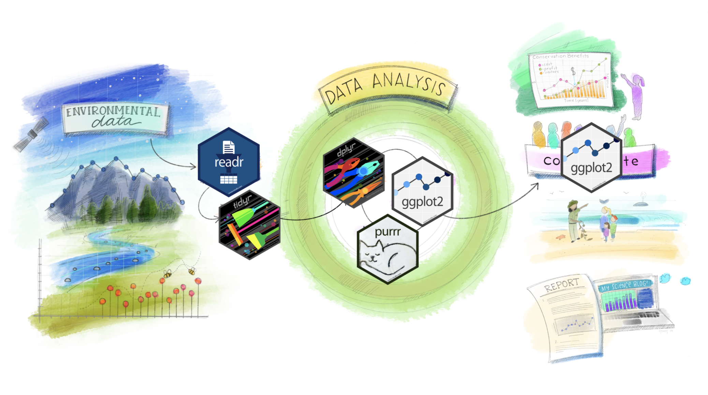
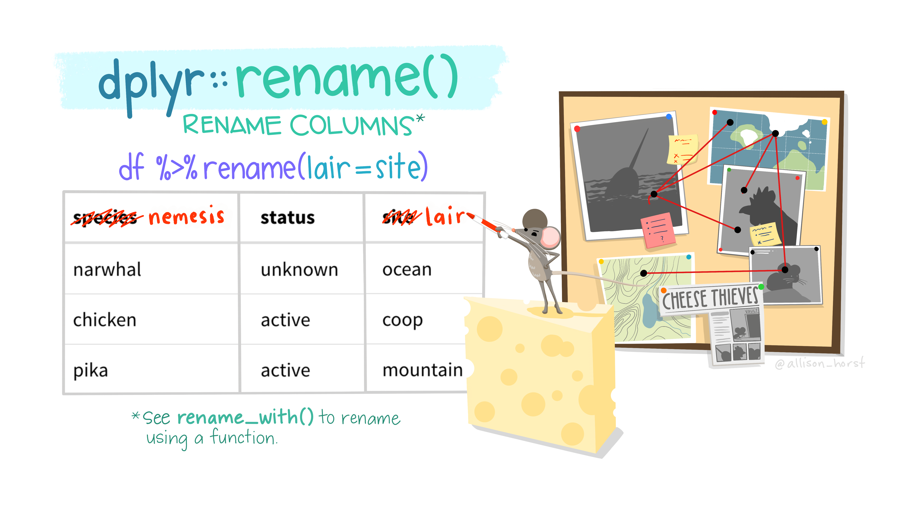
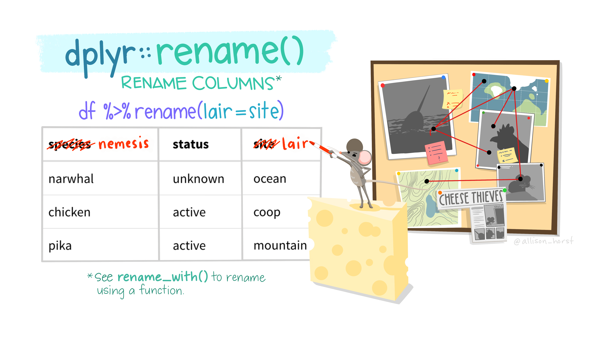
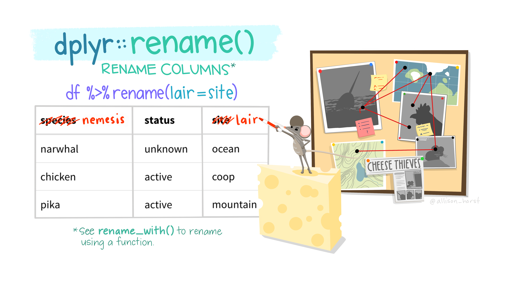
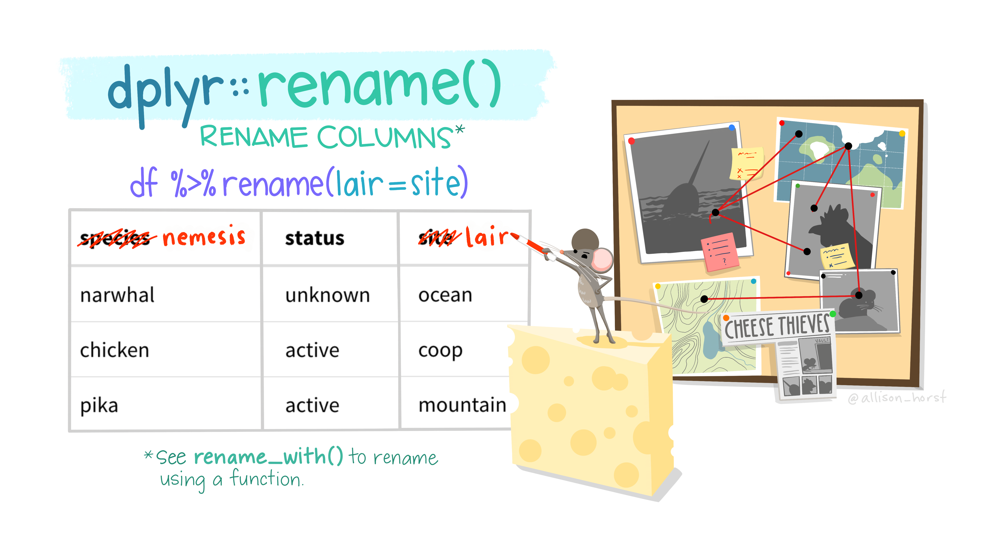

Data Wrangling with R
About this presentation
This seminar is the second in a series on R programming.
It’s targeted at people that took the first seminar, or have programming experience.
By the end of this presentation, you should know how to wrangle data in R:
- Explore
- Tidy
- Summarize
- Analyze
- Raw code available on Github

Structure of the presentation
The presentation is split into five topics:
Topic 1: RStudio Projects
Topic 2: Tidyverse
Topic 3: Data wrangling
- Explore
- Tidy
- Summarize
- Analyze
Topic 4: Piping methods
- Topic 5: Additional resources

Data wrangling


RStudio Projects

Basic steps to working with (wrangle) data in R:
Check or set a working directory.
Load data.
Wrangle data (Explore, Tidy, Summarize, and Analyze)!
Check or set a working directory.Set up an RStudio Project.Load data.
Wrangle data (Explore, Tidy, Summarize, and Analyze)!
RStudio Projects:
- Projects keep all files associated with a project together
- “Home” directory of the project becomes the current
working directory - Projects can enhance reproducibility if paths within scripts
are kept relative and not absolute.
Topic 2: Tidyverse
- Tidyverse - collection of R packages for data science


- Underlying design philosophy, grammar, and data structures
Topic 2: Tidyverse



Topic 2: Tidyverse
- Tidyverse packages can be installed and loaded individually:

- Or, in bulk, with the
tidyversepackage:
[1] "broom" "conflicted" "cli" "dbplyr"
[5] "dplyr" "dtplyr" "forcats" "ggplot2"
[9] "googledrive" "googlesheets4" "haven" "hms"
[13] "httr" "jsonlite" "lubridate" "magrittr"
[17] "modelr" "pillar" "purrr" "ragg"
[21] "readr" "readxl" "reprex" "rlang"
[25] "rstudioapi" "rvest" "stringr" "tibble"
[29] "tidyr" "xml2"
Topic 2: Tidyverse
Core packages - dplyr, forcats, ggplot2, purrr, readr, tibble, tidyr, stringr
dplyrpackage:- Introduces consistent set of functions (verbs)
- Applied across all Tidyverse packages
filter(...) # Picks cases based on their values
select(...) # Picks columns based on their names
slice(...) # Picks rows by position
arrange(...) # Changes the ordering of rows
group_by(...) # Allows operations by groups
mutate(...) # Adds new variables to a dataset, or transform existing
summarise(...) # Summarise multiple values
count(...) # Counts number of rows in a group
add_row(...) # Add a row of data to a data frame
Data wrangling
Basic steps to wrangle data in R:
- Explore
- Tidy
- Summarize
- Analyze
Data wrangling
Basic steps: Explore, Tidy, Summarize, Analyze
View(df) # View the data
str (df) # Data structure
head(df,5); slice_head(df,n=5) # Print first five rows
tail(df,5); slice_tail(df,n=5) # Print last five rows
nrow(df) # Number of rows (observations)
ncol(df) # Number of columns (variables)
dim (df) # Dimensions (rows x columns)
rownames(df) # Print row names
colnames(df); names(df) # Print column names
complete.cases(df) # Check if observations are complete
duplicated(df) # Check if observations are duplicated
Data wrangling
Basic steps: Explore, Tidy, Summarize, Analyze
drop_na(...); na.omit(...) # Remove observations with missing values
unique(..) # Check unique values of a variable (character)
levels(factor(...)) # Check unique levels of a variable (factor)
mutate(...) # Adds new variables to a dataset, or transform existing
case_when(...) # Sequential "if else" statements
str_squish(...) # Remove extra white space
str_split(...) # Split strings
distinct(...) # Keep distinct observations
rename(...) # Rename variables
relocate(...) # Relocate variables within data frame
pivot_wider(...); pivot_longer(...) # Change overall data structure form# Check unique groups
unique(df$penguin); levels(factor(df$penguin))
# Fix extra white space
df <- mutate(df, penguin=str_squish(penguin))
# Fix spelling mistakes
df <- mutate(df,
penguin=case_when(
penguin == 'Pygoscelis papa' ~ 'Pygoscelis papua',
penguin == 'Pygoscelis antarctica' ~ 'Pygoscelis antarcticus',
TRUE ~ penguin
))
# Remove duplicate entries
df <- distinct(df) # Simplify and rearrange
# Splitting values
df <- mutate(df,penguin=str_split_i(df$penguin,' ',2))
# Renaming variables
df <- rename(df,species=penguin)
# Rearranging variables
df <- relocate(df, year, .before='island')
# Change data form
df_long <- read_csv('data/penguins_long.csv')
# Long to wide form
df_wide <- pivot_wider(df_long,
names_from='measurement',
values_from='size')
# Subset data
df_subset <- filter(df, island=='Biscoe' & year==2008)
Data wrangling
Basic steps: Explore, Tidy, Summarize, Analyze
summary(...) # Quick overall summary of variables
mean(...) # Mean value of variable
median(...) # Median value of variable
max(...) # Maximum value of variable
min(...) # Minimum value of variable
length(...); count(...) # Get number of columns or rows
group_by(...) # Applying functions across groups# Descriptive statistics - overall
summary(df) # Quick overall summary of input values
mean(df$bill_length_mm, na.rm=TRUE) # Average of input value
max(df$bill_length_mm, na.rm=TRUE) # Maximum of input value
min(df$bill_length_mm, na.rm=TRUE) # Minimum of input value
sd(df$bill_length_mm, na.rm=TRUE) # Standard deviation of input value
length(df$bill_length_mm) # Set length of input value# Descriptive statistics - by groups
# Create a grouped data frame
df_group <- group_by(df, species)
# Summarize variable
summarize(df_group,
avg_bill=mean(bill_length_mm),
max_bill=max(bill_length_mm),
min_bill=min(bill_length_mm),
sd_bill=sd(bill_length_mm),
n_bill=length(bill_length_mm))
# Summarize across variables (clean data)
summarize(df_group,
across(4:7, mean))
# Summarize across variables (missing values present)
summarize(df_group,
across(4:7, ~mean(.x,na.rm=TRUE)))
Data wrangling
Basic steps: Explore, Tidy, Summarize, Analyze
Topic 4: Piping methods
Core packages - dplyr, forcats, ggplot2, purrr, readr, tibble, tidyr, stringr
dplyrpackage:- Introduces consistent set of functions (verbs)
- Applied across all Tidyverse packages
magrittrpackage:- Pipe operator (%>%)
- Forwards an object, into a function

Topic 4: Piping methods
Core packages - dplyr, forcats, ggplot2, purrr, readr, tibble, tidyr, stringr
dplyrpackage:- Introduces consistent set of functions (verbs)
- Applied across all Tidyverse packages
magrittrpackage:- Pipe operator (
%>%) - Forwards an object, into a function
- Perform multiple functions, without nesting, or creating multiple objects
- Pipe operator (
baseR added support for pipe operations (|>)
Review - Data wrangling in R:
- RStudio Projects can help to enhance reproducibility if paths within scripts are kept relative.
 
 
 
 
- Data wrangling = Explore, Tidy, Summarize, & Analyze
Tidyversepackages provide a consistent language (functions) and grammar (arguments).
- A piping workflow passes objects into data argument of functions
Topic 5: Additional Resources
Upcoming workshops (*via Zoom):
- Data vizualization with R (3/21, 3/24*)
- Shiny Apps in R (3/28, 3/31*)